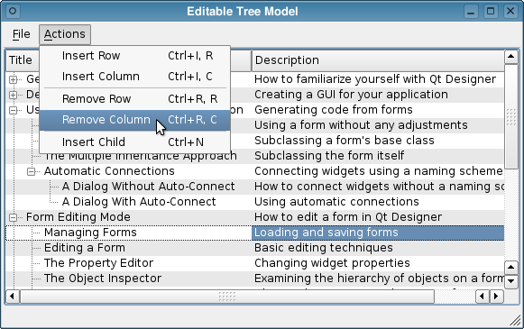

Item Views Examples

Qt provides a lot of capabalities to display pre- and user-defined item models in different ways. The separation of functionality introduced by the model/view architecture gives developers greater flexibility to customize the presentation of items.
The address book example shows how to use proxy models to display different views onto data from a single model. | |
The Basic Sort/Filter Model example illustrates how to use QSortFilterProxyModel to perform basic sorting and filtering. | |
This example shows how to create an editor that can be used by a QStyledItemDelegate. | |
The Combo Widget Mapper example shows how to use a custom delegate to map information from a model to specific widgets on a form. | |
The Custom Sort/Filter Model example illustrates how to subclass QSortFilterProxyModel to perform advanced sorting and filtering. | |
This example shows how to implement a simple item-based tree model that can be used with other classes in the model/view framework. | |
The Fetch More example shows how to add items to an item view model on demand. | |
This example demonstrates how to freeze a column within a QTableView. | |
The Simple Tree Model example shows how to use a hierarchical model with Qt's standard view classes. | |
The Spreadsheet example shows how to create a simple spreadsheet application. | |
The Star Delegate example shows how to create a delegate that can paint itself and that supports editing. |